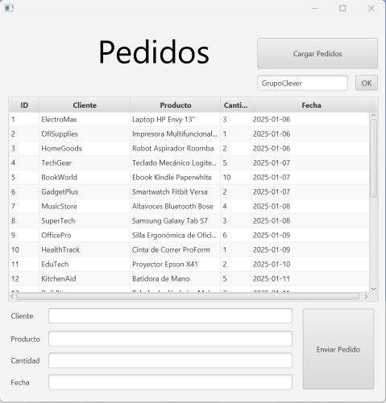

Manual de Usuario
1. Introducción
Esta aplicación permite visualizar y gestionar pedidos almacenados en una base de datos SQLite.
2. Instalación y Configuración
Para ejecutar la aplicación, simplemente abre el archivo ejecutable o compila el código en NetBeans.
3. Uso Básico de la Aplicación
- Ejecutar la aplicación.
- Presionar el botón "Cargar pedidos" para visualizar los datos.
- Filtrar los pedidos ingresando un cliente y pulsando "Buscar Pedido".
- Para añadir un nuevo pedido, completa los campos y pulsa "Enviar Pedido".
4. Capturas de Pantalla
Vista de la interfaz principal de la aplicación:
